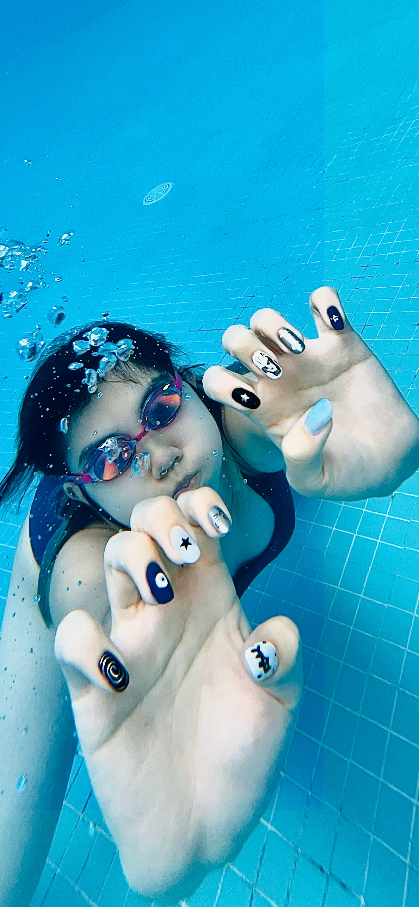
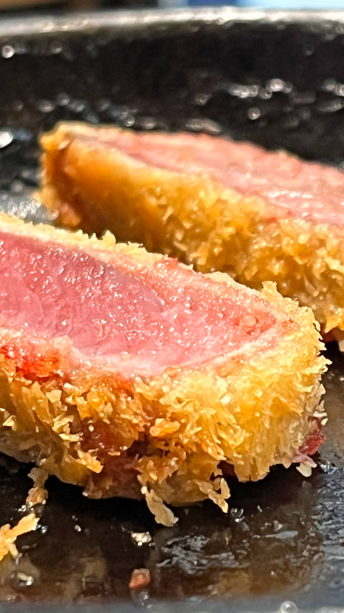

▍一場被打亂的假期，開啟新的座標
原本國慶連假早早規劃好，要全家一起到台南來趟六日遊。飯店地點挑在夜半覓食最方便的街區，行程安排得近乎完美。
沒想到出發前一週，兒子臨時宣布要準備模擬考，整趟計畫瞬間泡湯。於是，這場家庭旅行變成了「父女二人組」的臨時冒險。
我查了幾個國內城市的住宿與高鐵票價，赫然發現那數字竟和飛去菲律賓差不多。於是我心想—既然花費無異，不如換個國度，看點不同的世界。就這樣，我們在短短幾天內敲定航班，開啟一趟即興的馬尼拉六天五夜之旅。
▍起飛：從熟悉的天空，飛向混沌的城市
女兒不是第一次搭飛機，但這次是她第一次前往一個「生活節奏落後，卻又百貨公司林立」的城市。
我們帶著半夜匆匆塞好的行李，還特地空出一只行李箱，準備裝滿未知的戰利品。當飛機緩緩升空，她盯著窗外的雲海，我則在心裡默默想：也許，這趟旅程會教我們重新定義什麼叫生活。抵達馬尼拉後，第一印象並不浪漫—機場比預期簡陋，免稅店裡竟只剩兩家小小的行李箱店。結構簡單得像松山機場的加大版，卻亂中有序。
叫車程式顯示只要兩百披索，看似輕鬆的安排，卻開啟了「混亂的洗禮」：找不到司機、喇叭此起彼落、有人在車陣中擦玻璃，街道的秩序像被陽光烘乾的油畫，模糊卻真實。
夜幕降臨，我們在37樓的民宿望向整座城市。空氣霧霧的，但那份混沌裡有股生命的節奏。
▍第一夜的薯條鹽分實驗
我們的第一餐，是台灣也常大排長龍的Potato Corner。點了起司與酸奶口味的薯條，一口下去鹹得驚人—女兒邊笑邊嚷著「這是我人生中吃過最鹹的薯條，根本鹽罐直出吧！」，幸好還有我幫忙分攤這場「鈉離子攻擊」，否則她大概會瞬間脫水。
我們在附近邊走邊逛，試著熟悉周遭環境。街區的燈光昏黃卻溫柔，街道旁混合著油炸味與音樂聲，這種混亂的秩序反而讓人覺得真實。後來我們決定在Fame Mall吃碗雞腿拉麵，那湯頭濃郁甜美、麵條Q彈，搭配酥脆的雞腿，簡直是拯救味蕾的英雄。終於，在這一鹹一鮮之間，我們找回了知覺認知的平衡感。
儘管那晚的味覺混亂，卻象徵這趟旅程的開始—鹹甜交錯，不完美，卻剛好。
▍第二天：雨中的美術館與星巴克的午後
隔天早上，我們前往Ayala Museum。這座博物館乾淨、安靜、井然有序，展示著菲律賓的歷史與藝術。光線溫柔，展品敘事清晰，即使對歷史不熟，也能被那股文化的氣息包圍。
我一邊看著展區的設計與動線，一邊想著—這個國家雖然在生活層面仍顯粗糙，但在精神層次上，卻用自己的節奏保存著文化的厚度。
午餐時間，我們走進隔壁的百貨商場，驚喜發現竟有「鼎泰豐」。價格是台灣的一半，女兒開心得眼睛發亮，我也覺得能在異國吃上一籠小籠包，是種奇妙的親切感。然而，結帳時卻上演了一齣意外的戲碼—堂堂鼎泰豐，居然不支援 Apple Pay，也無法感應支付，只收現金或實體信用卡。我翻遍口袋，身上只剩一千披索和五十美元。現場一陣尷尬，我只好和櫃檯人員商量：「那我留在這裡，讓我女兒去換錢。」於是，她拿著那張全新的美鈔，依照Google map衝向那不知名的換匯處，而我就像個「人質」被留在櫃檯邊，尷尬又好笑地等著。十分鐘後，她氣喘吁吁地回來，把新換的披索交給我，我們才順利完成這頓「充滿現金誠意」的午餐。
下午暴雨突如其來，我們跑進星巴克避雨。雨勢密集得像打在玻璃上的鼓點，我處理郵件，她在一旁寫作業。那一刻，雨聲取代了音樂，時間變得柔軟。等雨停，我們搭車回飯店，窗外的城市又恢復了喧鬧。
那天，從博物館到小籠包，再到「人質換匯事件」，一切都混亂又有趣—這天充滿了意外，也滿是笑聲。
▍第三天：聖地牙哥堡的歷史氣息與巷弄裡的現實味道
這天我們安排了歷史路線。上午先去了聖地牙哥堡（Fort Santiago）—那是一座歷經殖民與戰火的古堡，石牆上斑駁的痕跡彷彿仍訴說著過去的動盪。
女兒在陽光下靜靜看著地上的石磚，我則想著這片土地的複雜歷史：西班牙、戰爭、重建、與現代交織出的多重層次。
 |
接著，我們走進The Manila Cathedral（馬尼拉大教堂）—正式名稱是Minor Basilica and Metropolitan Cathedral of the Immaculate Conception。那是我們第一次踏入如此巍峨的天主教堂。
當厚重的木門被推開，冷空氣與莊嚴的氣息迎面而來，彩繪玻璃灑下的光影，靜默得像時間也放慢了腳步。女兒抬頭仰望天花板的穹頂，我則被那份「信仰的建築語言」深深震撼—一座城市的靈魂，原來就藏在這樣的寧靜裡。
 |
然而，下午的節奏又回到了現實。女兒在台灣預約了一位華人美甲師，地點在馬尼拉中國城裡。為了找到那家店，我們必須穿過擁擠的巷弄與臨時市場。空氣中瀰漫著食物與污水混雜的氣味，熱氣裊裊，連呼吸都帶著濕度。
她穿梭在人潮往前走的背影，讓我一度懷疑這真的是做指甲的路，而不是要闖關？當我們終於找到那間位於新建公寓裡的工作室時，頓時有種逃出生天的錯覺。那次800台幣的美甲經驗，應該讓她對「美麗的代價」有了更深體會。
晚餐原本想簡單解決，泡一碗從台灣帶來的泡麵，再加上從超市買的新鮮牛肉，打算煎成骰子牛搭配。結果……那肉的口感正如女兒形容的：「像在咬橡皮筋。」我苦笑著舀了一口泡麵湯配著嚼，也只能安慰自己—這就是旅行裡的生活實驗課。
▍第四天：從焦糖邊的起司蛋糕，到搖滾夜的熱浪
第四天的行程，全由女兒主導。她早早就在出發前預約了El Born BGC —一間在馬尼拉名氣極高的西班牙料理餐廳，只為了那一塊「傳說中的起司蛋糕」。
那蛋糕上層微焦，邊緣帶著淡淡的焦糖色澤，外層酥香、內裡柔軟，切開時微微流心，像是剛醒來的晨光。第一口下去，濃郁的乳香與焦糖苦甜交織在舌尖，讓人一瞬間忘了周遭的喧囂。我看著她專注地品嚐那塊蛋糕，嘴角滿是滿足。那不是單純的甜點，而是一場味覺與記憶的儀式。
我也忍不住點了西班牙燉飯搭配紅酒，海鮮的鹹香、檸檬的微酸與金黃米粒的濕潤，組成了旅途中最完美的一餐。
夜晚，我們迎來這趟旅程最震撼的體驗—BABYMETAL WORLD TOUR，地點在SMART ARANETA Coliseum。
日本金屬搖滾團體的現場能量遠超預期，從第一首歌開始，全場觀眾便陷入一種幾乎宗教式的狂熱：燈光閃耀、低頻震動胸腔、成千上萬雙手在黑暗中揮舞。
我看著舞台上閃爍的光與汗水，突然覺得這座「生活落後、卻百貨林立」的城市，其實有一顆極為年輕的心。
 |
去程塞車、回程也塞車，車窗外的街燈不斷往後滑。女兒在旁邊哼著剛聽過的旋律，我想—這大概就是父女之間最獨特的默契：白天談藝術與甜點，晚上一起在金屬樂的轟鳴裡感受青春。
▍第五天：雨中的泳池與一場獨自的小冒險
第五天清晨，天空下著細雨。我們住的地方Fame Residences—一棟位於城市中心、兼具住宅與飯店功能的寶石公寓。儘管天色陰沉，女兒仍提議去游泳。她國小時曾是泳隊選手，也參加過世大運，如今雖少練習，身手依舊矯健。
|  |
那座戶外泳池寬闊得像一面鏡子，雨滴落下，激起一圈圈漣漪。她輕輕滑入水中，身影在雨霧中穿梭，划水的節奏穩定而俐落，每一次轉身都準確無比。
我坐在池畔，看著她流暢地劃出一條條水線，彷彿雨與泳姿在對話—冷冽的水、微灰的天空、與她堅定的節奏，構成了那天早晨最美的風景。
下午，雨勢漸大。她窩在房間裡，一邊吃披薩、一邊追劇，徹底進入度假模式。我則開啟了「一人冒險行程」。
頂著小雨走出公寓，沿著濕滑的人行道走到 Mandaluyong Highway Hills 捷運站，買了一張當地的地鐵卡—那張藍色的 Beep 卡，是這城市的日常通行證。
擠上地鐵時，車廂裡人貼著人，空氣混雜著濕氣與香水味。我只坐一站，在 Boni Station 下車，順著連通道逛進商場。那裡熱鬧、明亮，和外頭雨中的灰暗形成強烈對比。
我買了一瓶 韓國燒酒 SOJU，又順手挑了幾包當地的零食，想著晚點回去配著小酌。回程時，街道濕漉漉的，霓虹倒映在水窪裡。手裡拎著酒，獨自走在回公寓的漆黑道路上，心裡卻出奇的平靜。
那是一種屬於旅途尾聲的孤獨感—不是寂寞，而是一種安靜的滿足。
▍第六天：行李的重量，正好裝滿旅程
最後一天，我們睡到自然醒，收拾好行李，準時於上午十一點退房。搭計程車前往SM Mall of Asia—號稱亞洲最大的購物中心。
門口服務人員主動上前詢問是否需要寄放行李，態度親切得讓人心暖。雖然這項服務免費，但在取回行李時，我仍塞給他五美元作為小費—不為別的，只因那份貼心值得。
商場寬敞明亮，我們在裡頭採買伴手禮。女兒專注地把甜到要命的餅乾、美白肥皂、芒果乾、菲律賓啤酒一樣樣塞進那只出發時還空空的大行李箱。她笑著說：「這樣看起來才像真的來過。」那畫面，像是旅程被裝進生活的現實裡。
中午我們在商場裡吃了勝牛Katsuo。那一口酥脆的炸牛排，外香內嫩，正式為第三天那場「橡皮筋烤肉事件」劃下完美句點。
飽餐後，我們再搭車前往機場。城市仍舊擁擠、喇叭聲不斷，而我心裡卻異常平靜。
|  |
回程的車上，我想著這幾天的片段：混亂的交通、暴雨的午後、焦糖邊的蛋糕、雨中的泳姿。旅行或許從來都不在於目的地，而在於那個當下—當你願意笑、願意觀察、願意感受，就已經抵達了最遠的地方。
▍後記
這趟臨時成行的旅程，沒有縝密計畫，也沒有完美節奏，卻意外地豐富。從鹹過頭的薯條、現金換匯的插曲，到被雨浸濕的泳池與滿滿的行李箱，我重新體會到：旅行不是逃離日常，而是重新看懂生活。
而帶著女兒同行，更讓我發現—陪孩子看世界，其實是學會用她的眼睛，再一次看見世界。